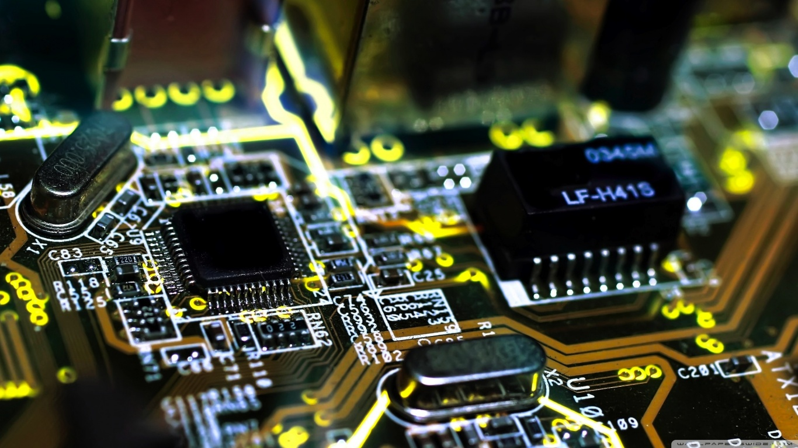

Ingeniería Informática - Ingeniería de Computadores
La disciplina de Ingeniería de Computadores abarca una extensa gama de saberes dentro del campo de la Ingeniería Informática, dado que se ocupa no solo de la programación de computadoras (software) sino también de su arquitectura interna (hardware). Este enfoque resulta esencial para diversas aplicaciones informáticas contemporáneas, como las destinadas a dispositivos móviles, sistemas empotrados y artefactos relacionados con el Internet de las Cosas (IoT).
Más información

